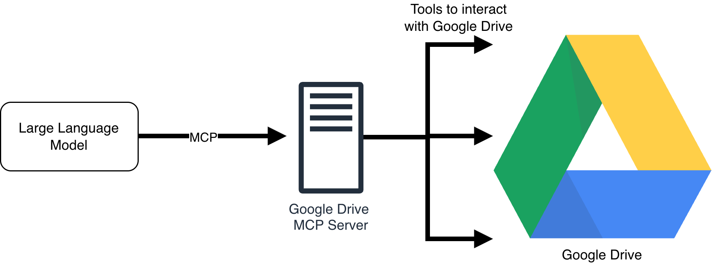
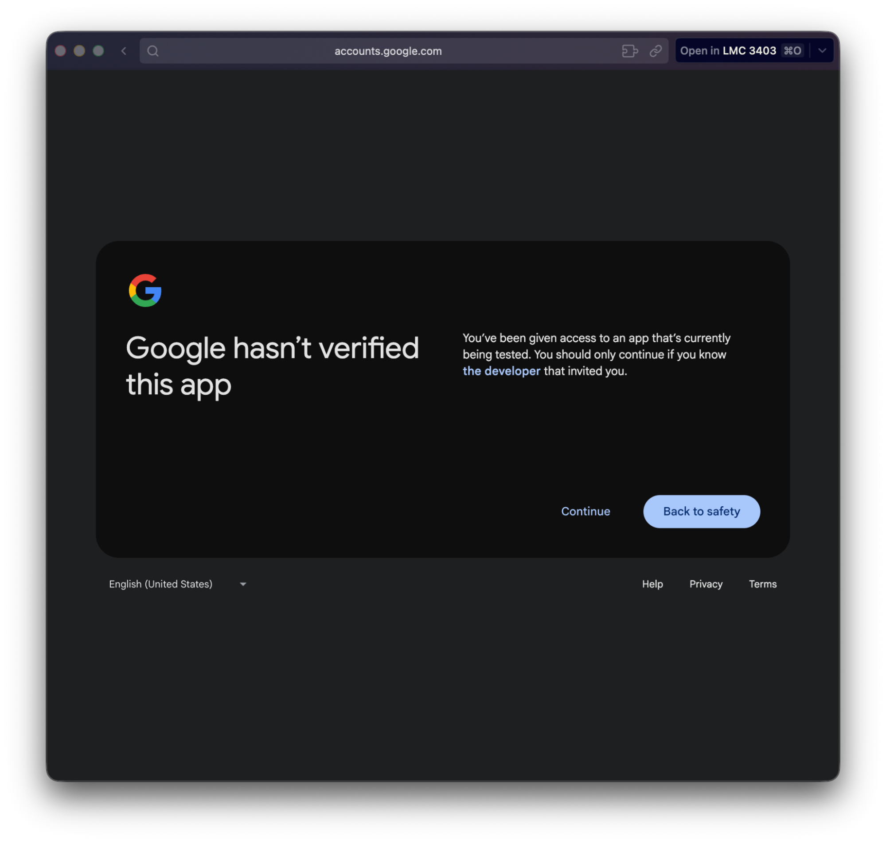
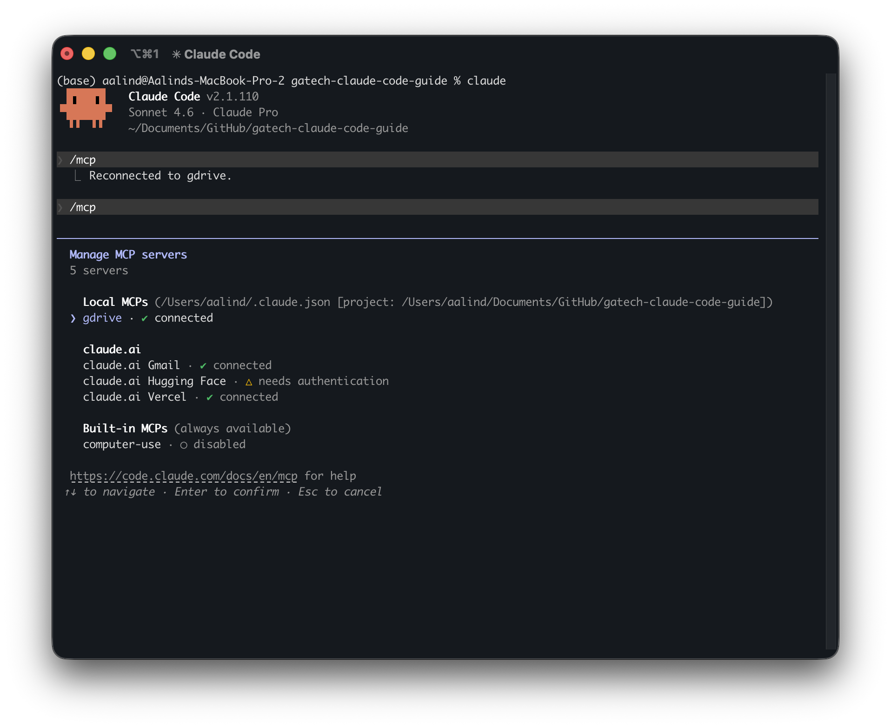
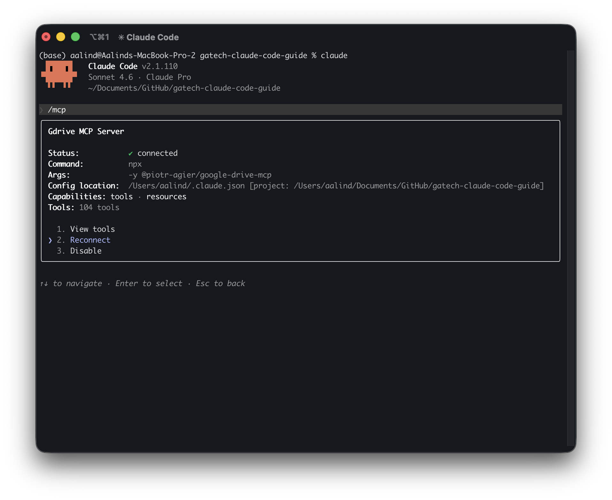
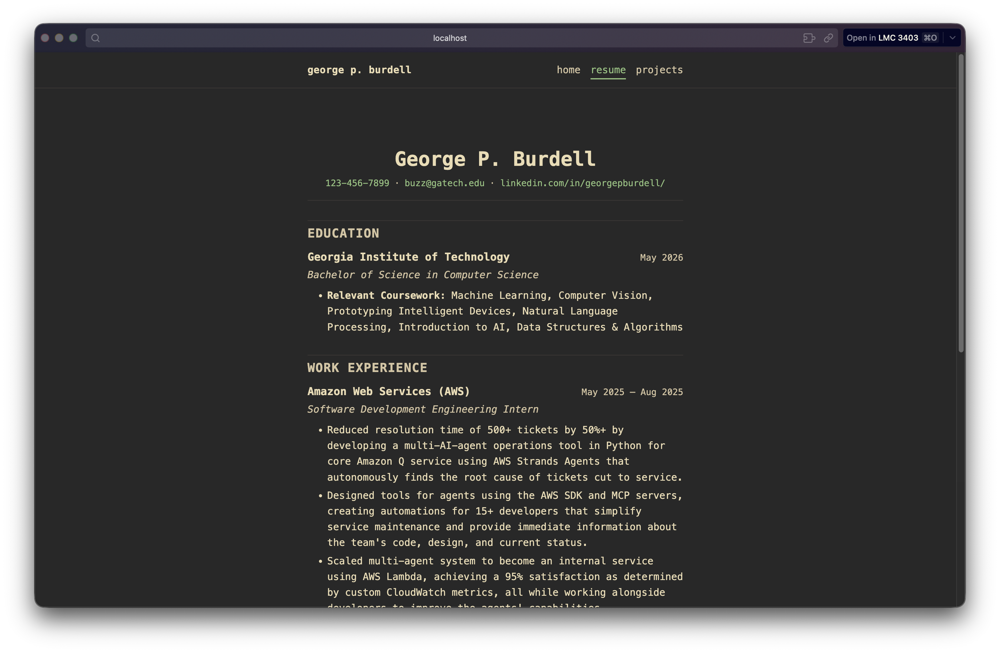

Adding in a Resume
To expand on our portfolio website, we're going to be adding in our resume. However, rather than simply embed a PDF onto the website, we're going to learn how to use Claude Code to extract the contents of our resume and have Claude add in the contents of our resume for us.
Model Context Protocol (MCP)
Instead of copying and pasting a text-based version of our resume, we're going to simply provide Claude with a shareable Google Drive link to our resume. Claude will then do the following:
- Use the link to access the file in Google Drive.
- Read the contents of the file by automatically downloading it.
- Extract the relevant contents from the resume that we specify.
- Use the contents of the resume to build the resume portion of the website.
At this point, you might be wondering: how can we give Claude access to Google Drive? And why even bother doing all this work with a resume? The answer lies in understanding the super powerful Model Context Protocol.
As software continues to expand, we want to give these agents access to this software so that we can perform actions. In other words, we want to give our agent access to many tools.
However, there's a problem that arises: for each software we wish to integrate into Claude to use as a tool, we need to ensure that Claude communicates with this software correctly. Since every software is different, there might be multiple ways to communicate with other software. Model Context Protocol unifies this communication into a single standard.
You can think of MCP like giving Claude access to an intercom system. Instead of talking directly to Google Drive, we talked to a specialized worker that exists outside of Claude that can access Google Drive for us. So, to get access to our resume, we have the following flow:
- You ask Claude to read your resume from Google Drive.
- Claude cannot directly see into your private Google Drive. So, it uses the language defined in the Model Context Protocol to tell our Google Drive "worker" to find our resume file and provide Claude with the contents.
- The worker goes into our Drive, finds the file, and provides it to Claude to temporarily download it to allow Claude to grab the contents.
While this may not seem like a big deal at the moment (after all, we could have just downloaded the resume and copy-pasted the contents into Claude), MCP provides agents like Claude Code to access multiple pieces of software, all while only needing to know 1 language: MCP.

Setting up a Google Drive MCP Server
To actually provide Claude with the tools to search your Google Drive, you need to use an MCP Server. This provides Claude Code with access to the set of tools needed to access your Google Drive.
You can think of it like a specific program that lives between Claude Code and Google Drive, containing the "worker" that goes into our Google Drive on behalf of Claude Code.
To set up Claude Code with a Google Drive MCP Server, which contains the tools we need to give Claude Code the ability to search + read files in your Google Drive, we need credentials.
Specifically, we need to use Google Cloud to provide us with a file that we can download that we then provide to Claude Code to make authenticated requests to our Google Drive.
To obtain the credentials, the steps are as follows:
- Go to console.cloud.google.com
-
Click on the projects icon at the top, and then create a new project.
- Feel free to call the project whatever you'd like. It does not matter for our purposes.
- Once the new project is created, click on the search bar at the top and search for "Google Drive API".
- Once you find the Google Drive API, click on the option, then click "Enable".
- Click on the left sidebar to make it appear, then click on the "OAuth consent screen" option under the APIs and Services menu.
- Once you reach the landing page, click "Get Started", and fill in your information. You can set the name to whatever you'd like, but be sure to use the email associated with your Google Drive account.
- Once you're done, head over to the left sidebar, and find the option for "Credentials" under the APIs and Services menu. Open the Credentials page.
-
At the top, click "Create Credentials", and select "OAuth Client ID".
- Application Type: Desktop App
- Name: Whatever you'd like.
- At the end: be sure to click download JSON to download the credentials.
- Click on the set of credentials you just made, then on the navigation bar on the left, select the "Audience" tab.
- Under this tab, you will see an area called "Test users". Add your email in to ensure you are added as a test user.
You may also refer to the following video for getting a credentials file from Google Cloud:
Once you have your credentials file downloaded, go ahead and get the file path of the JSON file.
- On MacOS: right click the file name, hold down the option key, and select "Copy [File Name] as Pathname".
- On Windows: hold Shift and right-click the item, then select "Copy as path".
Once you have the file path, you need to run 1 command to install the Google Drive MCP server:
claude mcp add gdrive -e GOOGLE_DRIVE_OAUTH_CREDENTIALS="[FILE_PATH]" -- npx -y @piotr-agier/google-drive-mcp[FILE_PATH] portion with the file path that you just copied.Here is a video demonstrating this command being run, along with the expected output:
After the MCP Server has been installed, you can type in claude to open up Claude Code. Immediately, you should be
prompted to log in with Google, and you should also see a screen like this:

After that, with Claude Code open, type in the command /mcp. You should see something similar to this:

Notice under the "Local MCPs" option, we see gdrive. This is our Google Drive MCP server. You can also see that it's still "connecting". Let's click enter to see the status:

Notice here that we have the option to "Reconnect". You should select this, then re-run the /mcp command
to see the image above. Notice: we have nearly 104 tools, all for Google Drive related functionality!
With the Google Drive MCP server setup, we can finally use Claude Code to get the contents of our resume. Here are the general set of steps that we'll take:
- Start a new session for "phase 2". This is the resume insertion phase, and will provide Claude Code with all the necessary information related to other phases and tasks completed previously.
- Enter plan mode and have Claude Code create a plan. This includes fetching the contents of your resume.
- Execute the plan with Claude Code.
- Preview the website and its changes.
- Commit the code to GitHub.
- Close the session, allowing Claude Code to log its progress.
Here is a video going over this process (note: there is no audio as we're simply prompting Claude and confirming it's outputs - feel free to skip ahead throughout the video!):
Here's the final result:
